Backchannel
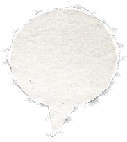
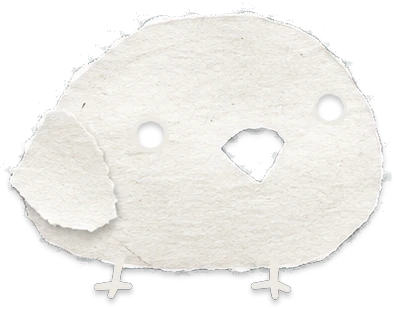
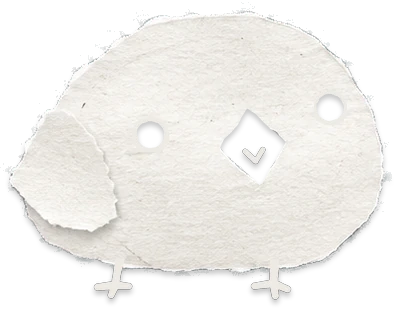
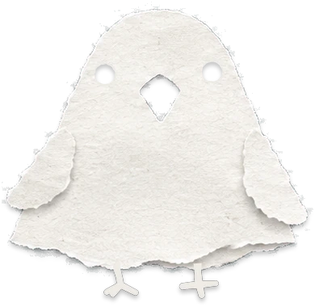
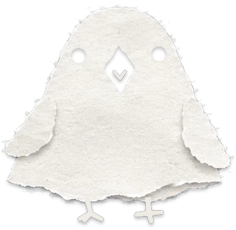
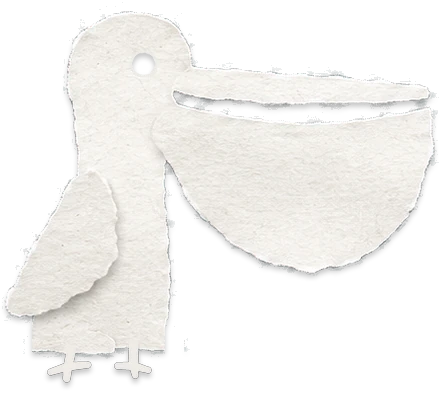
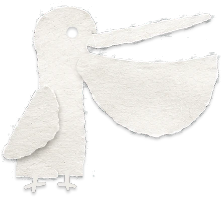
The internet's commentary track.
Install Backchannel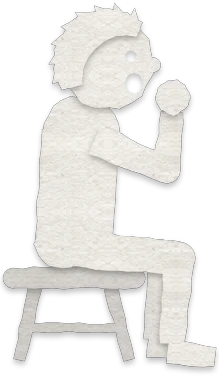
How does it work?
Bring the discussion to you
Stop doing the two-tab tango between what you're reading and the discussion about it. Backchannel puts the conversation right beside the page, with a customizable, repositionable toggle to show it when you want it and hide it when you don't.
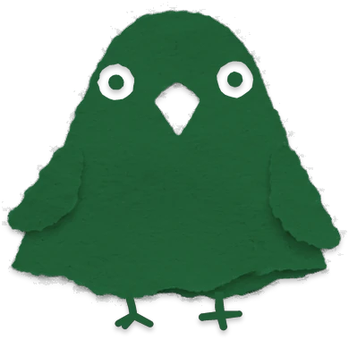

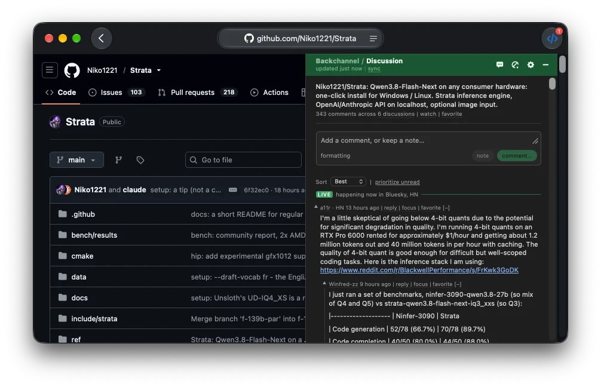
See where the conversation is focused
Quoted and heavily discussed passages are highlighted automatically, so you can see where the conversation is concentrated as you read. Click a highlight to jump straight to the comments about that passage.
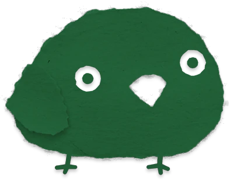

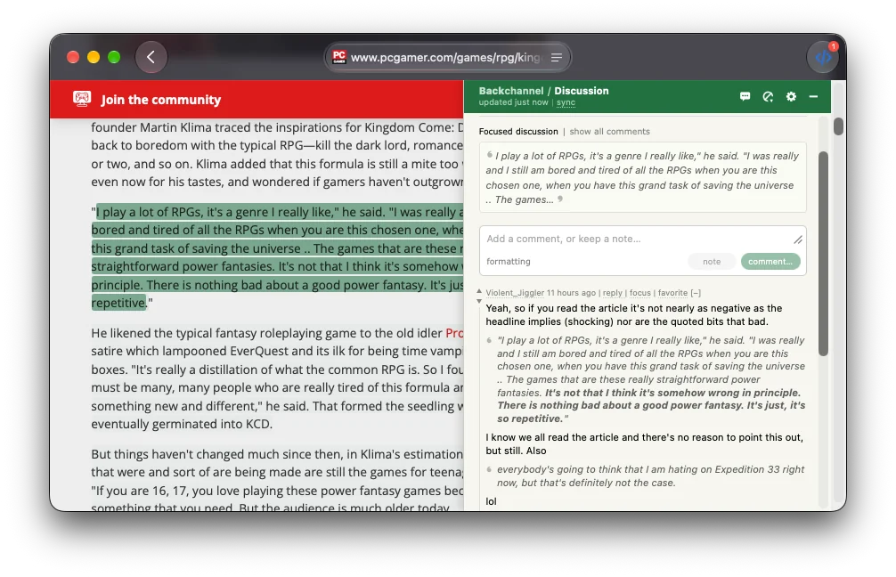
A new front page of the internet
Don't let silos stop you from finding your next great read. Backchannel blends the sources you choose into a single front page, so what's worth reading can come from anywhere you follow.
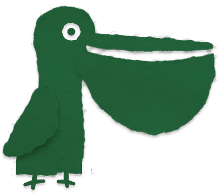

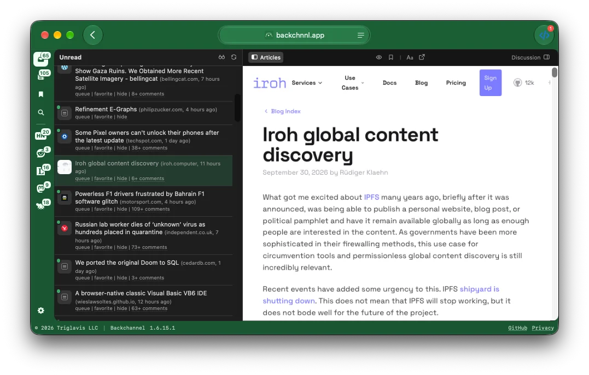